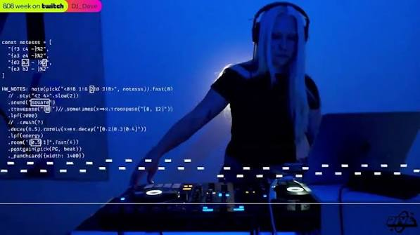

Inside the Sound

Code That Moves You
DJ_Dave is an electronic musician and live coder who uses programming as part of her creative process. Her performances transform code into energetic electronic music, bringing technology and club culture together.
Rather than relying only on pre-made tracks, she works with code to generate and manipulate sound in real time. This approach makes programming part of the performance itself, creating a connection between digital systems, improvisation, and dance music.
Her work explores how technology is not necessarily at odds with artists and their creatice process... And that this technology can be a great tool for creative expression
Sound as a Living System
Live-coded music can evolve as its instructions change. DJ_Dave's work offers a way to think about electronic music as something interactive and experimental.
Explore Her Music
Discover DJ_Dave's performances, releases, and experiments with live-coded sound.